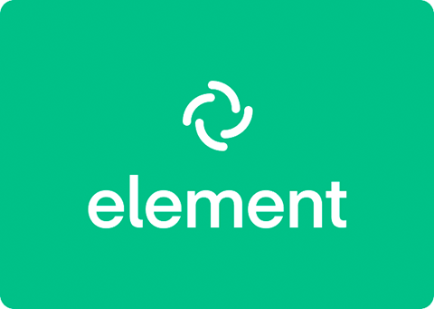
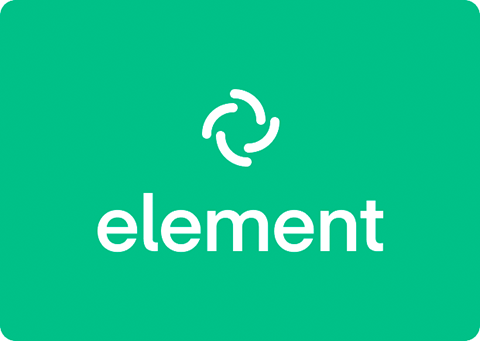

Le projet sur matrix synapse et element consister à avoir une machine pour matrix, postgres, element et reverse proxy. Nous avons du configurer toute ces machines à la main et faire une procédure de comment nous les avions configurer et à la fin nous devions avoir un element fonctionnel avec plusieur utilisateurs et que tout soit bien stocké dans notre machine base de donnée et pour communiquer avec ces machines nous devions forcément passé par le rproxy.
Voici quelques images:

Compétences :
 
